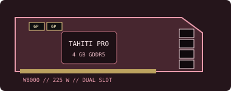

[ LEGACY WORKSTATION GRAPHICS ]
AMD FirePro W8000 4 GB
A 2012 high-end Tahiti Pro workstation card created for compute-assisted professional graphics, design and visualization.

Recorded specifications
| GPU | Tahiti Pro GCN; 1,792 stream processors. |
|---|---|
| Memory | 4 GB GDDR5, 256-bit memory interface. |
| Interface & power | PCI Express 3.0 x16; 225 W board-power class; two 6-pin PCIe auxiliary connectors. |
| Outputs | Four DisplayPort 1.2 outputs. Some professional/reference configurations include SDI-specific I/O; identify the exact panel before planning external video workflows. |
| Physical fit | Dual-slot, full-height card with a large active cooler. Reserve two adjacent slots and verify exact card length, airflow and both 6-pin leads before installing. |
Workstation & driver compatibility
This high-power legacy FirePro board needs a workstation with a full-bandwidth PCIe x16 slot, two independent 6-pin feeds, two-slot clearance and robust airflow.
- Use an archived AMD FirePro professional driver that explicitly lists W8000 and the desired OS. Check application certification; support for modern CAD or compute software is not implied.
- Confirm PSU output, thermal design and OEM workstation validation. PCIe slot compatibility alone is insufficient for a 225 W accelerator-class board.
- Inspect both power receptacles, fan, cooler, output panel and firmware before operation; verify any SDI hardware is fitted to the actual card.
Sources & further reading
- AMD — previous drivers and product supportOfficial legacy driver archive; verify W8000 and OS inclusion in the selected package.
- AMD — Radeon Pro Software for Enterprise 21.Q2 release notesProfessional driver support and release information from AMD.
- TechPowerUp GPU Database — FirePro W8000Independent model-specification cross-check; exact board and I/O revision should be inspected.
Reference power/port information may not apply to every OEM card. Confirm its label, required connectors, actual shroud dimensions and cooling before use.